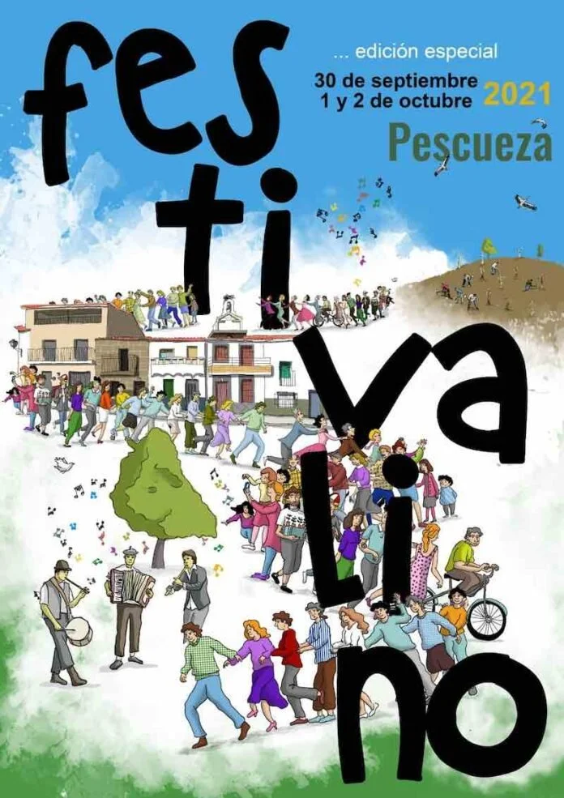
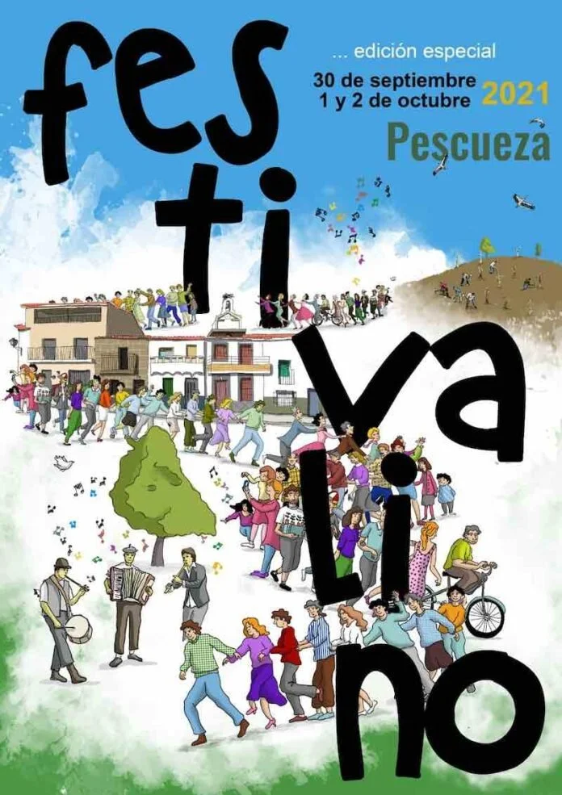

El Festivalino
El Festivalino de Pescueza regresa un año más, y ya son 15, a la localidad del Valle del Alagón (Cáceres) que le da nombre. Este año el festival vuelve a sus fechas habituales en primavera y se celebrará el fin de semana del 1, 2 y 3 de abril, y como siempre aunará ruralismo con cultura, música y mucho arte.
Esta nueva entrega deja atrás las restricciones de la pandemia y contará con una madrina como es Conchita y dos padrinos: Rayden y Funambulista. El resto del programa musical contará con las actuaciones de Andy y Lucas, Reincidentes, Los Toreros Muertos, La Bruja Roja, Omnia Transit, La Vallekana Sound System, Susana Cedrún (Sü) y Discoplay.
Os recordamos que habrá zona de caravanas y de acampada gratuita (con duchas en el Albergue municipal), talleres infantiles y divulgativos, puestos de comida, pasacalles y batucada, mercadillo y varios escenarios en torno a la Plaza Mayor, Plaza Álamo y Plaza Postigo.
Esta es una lista de las actuaciones:
- La Década Prodigiosa
- Tanxugueiras
- Soraya Arnelas
- Cerandeo
- Rayden
- Jamones con Tacones
- Malefino
- El Jose
- Los Jacobos
- La Mendinga
- Discoplay
- Dj Coke
Ediciones anteriores
 

Otros eventos de este mes